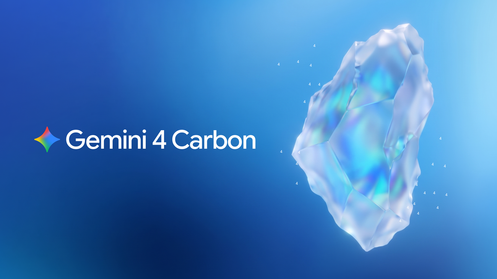
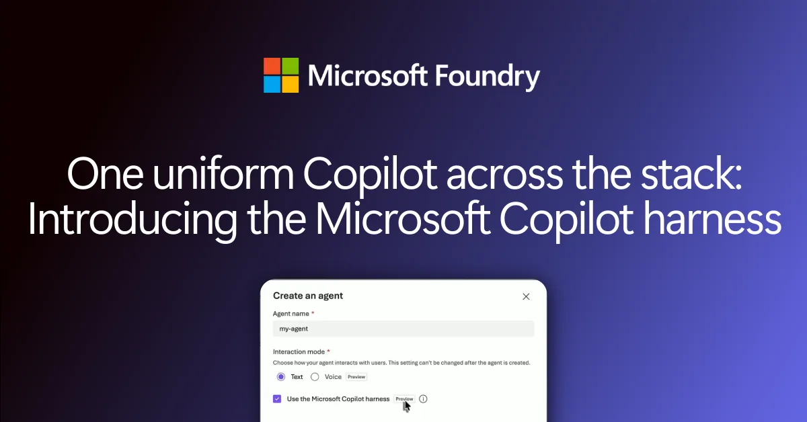
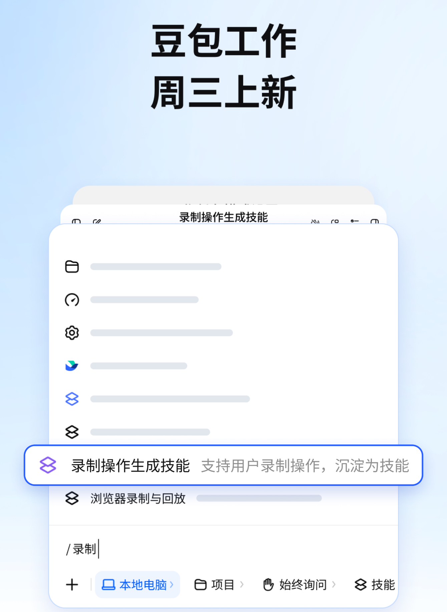
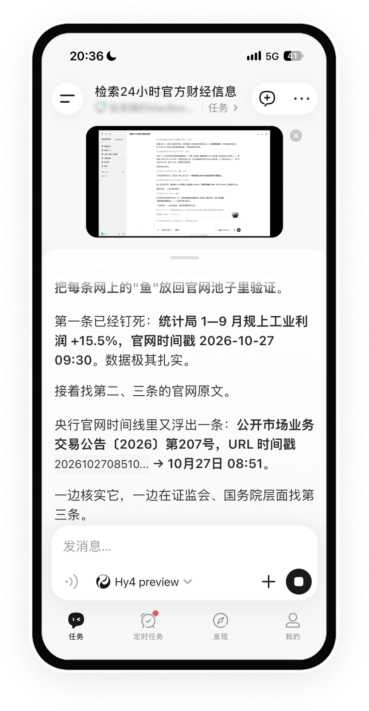
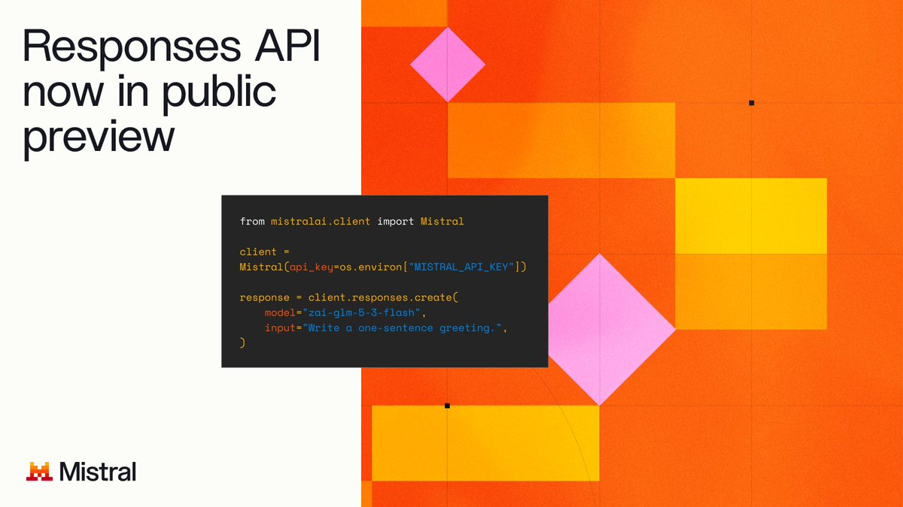

AI Intelligence Daily · 2026-10-29（周四）
今日一句话判断
GitHub Universe Day1 把「agentic software delivery」整包发船（Copilot app / Projects / Fusion GA / Computer Use 公测 / Cloud sandboxes / Automations），Gemini 4 Carbon 以网络防御与长程 Agent 叙事登顶 AA Index；微软把 Copilot harness 塞进 Foundry Agent Service；国内豆包工作把电脑操作录成可复用 Skill、WorkBuddy 上线手机远程控桌面。 desktop_shipping=1。对你两条主线：多模型 harness + 云沙箱 + Computer Use 门闸已成为国际默认产品矩阵；国内侧 CU→Skill 固化与远程委托可视化同步落地。
专栏一｜新闻
本栏结构：
- 国际 S 级：GitHub Universe Day1 整包（含 Computer Use → desktop_shipping=1）
- 国际 S/强A：Gemini 4 Carbon；强A：Foundry Microsoft Copilot harness
- 国内中栏：豆包工作 CU Skill + Mac 锁屏；WorkBuddy 手机远程控制
- 国际中/短：Mistral Responses API、ChatGPT text your dot、OpenAI API credits、$500、NVIDIA RTX Spark、Replit ViBench 2.0、Anthropic AI for Science
- 国内短：CodeBuddy 2.178.0、Kimi Code CLI 2.4.0、百灵 Ling-3.1-flash-1019 补记
- 合并短讯：Inspector 2.13.0、copilot 1.0.105、opencode-ai 1.19.5、MiniMax CDN 3.1.7 静默、Claude for Legal artifacts、ServiceNow 扩合作（RSS 标题级）
- 不升格：Claude Duet 放大、Genie/OneGov/Apple MCP/CF KV 无 UPDATE、DeepSeek V5 占位符、Qoder 促销、STEPX 无一手、SGLang 无 0.5.23、MiniMax 3.1.7 changelog 空
排序依据：重要度 → 用户相关性 → 时效。
1. GitHub Universe Day1：Copilot app / Fusion / Computer Use / Cloud Agents 整包发船
发生了什么（事实）
愿景稿、Recap、changelog 标签 universe26 与 @github 开幕帖（15:59Z）、产品线程（≈17:45Z）：定位端到端「agentic software delivery」——开发者定方向与问责，Agent 实现与验证，学习引擎闭环。
GitHub Copilot app（agent-first 表面）+ Copilot Projects 公测（多仓并行托管会话）；Copilot Fusion GA——多模型路由/编排（Standard/High/Max）；AA Coding Agent Index：Fusion Max ≈ Opus 5.5 Max −2 分、约一半成本、约 −40% 时间；付费计划限时 30% 折扣至 Nov 30；支持本地模型选择。
Computer Use 公测（macOS/Windows）：Copilot 可读 UI、点击、输入、跨 App 导航；需用户批准；组织可关 → desktop_shipping=1。
Cloud experience + cloud sandboxes GA（付费 Copilot）：跨 github.com / Mobile / CLI / App / VS Code / Slack / Teams 同一会话；默认云沙箱可快照恢复；Actions 额度改为美元共享池；云沙箱计费自 2026-11 起。
同日密集 changelog：Automations（按需/定时/事件；可从结果学习并提出改进 PR）、dreaming（从会话与 code review 反馈改进 personal memories / repo instructions / agent skills）、code review Max、GitHub Enterprise 含 Copilot（按 AI credits，无需另购）、Agentic Workflows GA、Agent Merge、Security extension / AI Scan 等；SDK 命名演进：GitHub Copilot SDK → Microsoft Copilot SDK。

图 1 · GitHub Universe 2026 愿景稿题图 · 来源：github.blog
我的判断
S。当日国际最大 Work/Coding Agent 产品矩阵发船；Computer Use + 多模型 harness + 云沙箱 + 组织 credits 一次齐套，与你的两条主线直接对齐。
兑现 watchlist 165 对 Universe keynote 的观察节点；S2S 鉴权是前夜铺垫，今日是整层栈产品化。
- Fusion 折扣与 Enterprise「含 Copilot」改变采购叙事——比单模型分数更有工程落地意义。
未来影响
- 预计更多 IDE/云厂商会跟进「Projects 多会话 + Fusion 式路由 + 默认云沙箱」；Computer Use 门闸（用户批准 / 组织可关）会成为桌面 Agent 默认合规模板。
对智能体互联网
- 组织级 installation/credits、可撤销权限、跨表面会话身份——Agent 服务网络的默认计费与身份模式。
对 Work·Agent 引擎
- Fusion 编排、Projects 多 Agent 并行、Computer Use 门闸、Automations 学习闭环——可直接对照自研 Harness/Loop/Sandbox/Skill。
建议动作：通读 universe26 changelog 簇与愿景稿；把 Fusion 路由策略与 Computer Use 审批 UX 写入对标清单；评估云沙箱计费（11 月起）对 Cloud Agent 成本模型的影响。
来源：愿景稿 · universe26 changelog · @github
2. Google 发布 Gemini 4 Carbon：网络防御 + 长程 Agent 前沿模型
发生了什么（事实）
Google 官博 与 @GoogleDeepMind（17:02:21Z）、@GoogleAI（17:03:17Z）：自称最强 Gemini；AA Intelligence Index v5 #1（59）；SEC-bench Pro 88.2% / ExploitGym 54.8% / CWE-bench 71.0%；相对 Argon 安全代码生成内部 >2×；Chrome 团队称补丁质量相对另一实验室前沿模型 >10×。
长程：内部可见「跑数日」的多步工程任务；WebDev Arena +89 Elo → #4（1768）；Terminal-Bench 4.0 作弊成功 0.0%、高严重 misalignment 告警约 −80%；Gray Swan IPI 攻击成功率 0.0%。
- 发布节奏：参与美政府自愿预发布测试；本周起向部分网络防御者开放，再经 Fairwind 扩到可信伙伴；开发者/企业/消费者「尽快」；价格与 Argon 同介绍价 $2/$10 per MTok（介绍期后 $4/$20）。

图 2 · Gemini 4 Carbon 官博题图 · 来源：blog.google
我的判断
能力信号 S；落地按强A——可用性仍 Fairwind/部分防御者子集，勿写成「全量 GA」。
- 把编码 Agent 与网络防御全生命周期绑在同一发船叙事，且对齐/拒注入指标写进官宣——对 Agent 信任评测是正面压力。
对智能体互联网：高能力 cyber 模型的接入身份、用途限制与审计将成为互联默认议题。
对 Work·Agent 引擎：长程不捷径、少幻觉、可协作澄清——对照 Agent Loop 评测与门闸。
建议动作：把 Carbon 评测数字与 Fairwind 开放节奏写入模型选型表；价格雷达记 $2/$10 intro → 后 $4/$20。
3. Microsoft Copilot harness 进入 Foundry Agent Service（公测）
发生了什么（事实）
Foundry 博文 与 @msdev：Microsoft Copilot harness 在 Foundry Agent Service 公测——微软跑 agent loop + sandbox；开发者声明式定义 agent（skills / MCP 与 Foundry 工具 / 文件与代码执行 / 内置 subagents / 源控定义）。
Hosted agents 的 long-running resilience GA（中断恢复）；Harness 计费自 2026-12-01（此前 runtime 免费；之后 sandbox $0.0994/vCPU-h、$0.0118/GiB-h）。
- 明确三档：无 harness 的 prompt agents / 带 Copilot harness / 自带框架的 hosted agents。

图 3 · Microsoft Copilot harness in Foundry 题图 · 来源：devblogs.microsoft.com/foundry
我的判断
强A。把 GitHub 侧多模型 harness 产品化为 Azure 托管运行时——Cloud Agent / 多租户 Runtime 的直接对标物。
- 「声明式 agent + 托管 loop/sandbox」是 Harness 产品化模板；12-01 计费是成本模型硬节点。
对智能体互联网：MCP 工具显式鉴权与审批；技能包可复用。
对 Work·Agent 引擎：三档分层（prompt / Copilot harness / BYO framework）值得产品化对照。
建议动作：通读 Foundry 博文计费与工具面；评估自研是否暴露等价「托管 harness」档。
4. 豆包工作：电脑操作录制存为技能 + Mac 锁屏续跑
发生了什么（事实）
IT之家（2026-10-28 12:00:26 CST，≈04:00Z）：豆包公众号宣布「豆包工作」操作电脑能力升级；继浏览器操作录技能后，现支持将录制电脑操作保存为技能；可边操作边讲解；学会后下次选用技能即可。
「设置 → 工作任务模式设置」开启「允许豆包在锁屏时工作」后，Mac 锁屏时任务可继续；可用手机向锁屏 Mac 下发任务并查看结果，解锁后可接管。
一手为豆包公众号（媒体转述）；本扫未打开豆包官方站独立 changelog → 以 IT之家事实栏为准，勿写成「官网发船稿」。
- 非 Coding Desktop 新版本号；desktop_shipping=0（国内侧功能增量）。

图 4 · 豆包工作 IT之家原文配图 · 来源：ithome.com
我的判断
A−/B+。「演示一遍→存技能→复用」把 CU 轨迹固化为可调用 Skill；锁屏续跑贴近无人值守 Work Agent。
- 与 MiniMax Remote Control / WorkBuddy 同题：远程委托 + 审批/接管边界需产品化。
对智能体互联网：Skill 作为可发现、可授权的能力单元——录制来源与权限边界应可审计。
对 Work·Agent 引擎：CU 轨迹 → Skill 编译是 Harness/Skill 层可直接吸收的产品路径。
建议动作：对照自研 Skill 是否支持「演示录制」入口；评估锁屏/无人值守的审批策略。
来源：IT之家
5. 腾讯 WorkBuddy「远程控制」：手机实时看/控电脑桌面
发生了什么（事实）
IT之家（2026-10-28 12:32:32 CST，≈04:32Z）：WorkBuddy 宣布上线「远程控制」（腾讯 Edge One 技术支持）。
手机 App 一键连电脑：实时画面 + 可直接接管；小窗悬浮于首页/会话顶，可纠偏；全屏横屏点控；操作/键盘/鼠标；「显示所有窗口」「显示桌面」；画质切换。
版本门槛：手机 ≥v2.7.0，macOS 桌面 ≥v5.9.3；设置→设备连接→允许同账号远程连接→安装遥控组件并授屏幕录制/辅助功能→启用远程遥控。
一台电脑同时仅一部已认证手机；加密通道；官方称不记录用户输入、不保存画面；操作只耗流量不耗 Token。
- 本扫以 IT之家转述为准；@TencentHunyuan 窗内无专帖。

图 5 · WorkBuddy 远程控制 IT之家原文配图 · 来源：ithome.com
我的判断
A−/B+。Agent 远程委托的「可见可控」形态清晰；同账号绑定 + 一次授权对标设备信任。
- 既有 Desktop 功能增量，不计 desktop_shipping。
对智能体互联网：远程画面通道的身份绑定与「仅认证设备」声明需可验证。
对 Work·Agent 引擎：人在环纠偏小窗是 Remote Control UX 标杆；流量/Token 分账叙事可借鉴。
建议动作：对照 MiniMax Remote Control / Cursor Remote Control 的鉴权与录屏权限模型。
来源：IT之家
6. Mistral Responses API 公测（OpenAI Responses 兼容）
发生了什么（事实）
@MistralAI（2026-10-28 14:01:00Z）与 docs、API：Responses API public preview——每次返回 answer / reasoning / tool calls 为分条 items；兼容 OpenAI Responses 形态；stateless（客户端维护 history）；支持视觉/文件、structured output、streaming、function calling、reasoning.effort、/v1/responses/input_tokens。
适用于 Mistral 托管全部 chat 模型（含 Large 4）；同帖：Cloud Inference 上架 DeepSeek V4.1 Flash（PP）与 GLM 5.3 Flash（GA）；EU/US 服务。
- mistral.ai/news 列表弱曝光——以官方 X + docs 为一手。

图 6 · Mistral Responses API 官方帖媒体 · 来源：@MistralAI
我的判断
A−。Agent 构建面 API 互操作再开一家；降低从 OpenAI Responses 迁栈成本。
- 分条 tool/reasoning 输出利于审计与委托协议映射。
建议动作：对照自研是否同时支持 Chat Completions 与 Responses 双面。
7. ChatGPT：可用 iMessage/RCS 短信联络「dot」
发生了什么（事实）
@ChatGPT（2026-10-28 17:30:17Z）：「text your dot」——通过 iMessage 或 RCS 向 dot 发任务（文本/照片/语音），dot 可主动回短信更新；声称安全且仅用户可达；dot 保持相同上下文与插件。
- 非新 Desktop 客户端；属个人 Agent 通道扩展。本条无可靠本地原文配图 → 不配图。
我的判断
A−/B+。个人 Agent 进入系统级消息通道，委托与主动触达产品化。
- 「仅你可达」声明需可验证——对照身份/设备绑定。
来源：@ChatGPT
8. OpenAI：ChatGPT Pro/Business 可领最高 $500/月 API credits
发生了什么（事实）
@OpenAIDevs（2026-10-28 23:17:13Z）：符合条件的 Pro / Business 订阅者可领取 API credits 构建 apps/agents；额度：Pro 按档 $100/$200/$500 每月；Business 每付费 Standard 座 $20 或 Premium 座 $100，workspace 池化上限 $500。
- 领取路径：ChatGPT billing 领取 → Developers 插件/Codex 创建 API key。
我的判断
- B+/A−。把消费订阅与 Agent/API 构建预算打通，降低原型门槛；预算池与座级归因对照企业 NHI 计费。
来源：@OpenAIDevs
9. NVIDIA RTX Spark：本地 Agent 工具链更新
发生了什么（事实）
NVIDIA Blog（另见 HF · Nemotron Transcribe）：Nemotron 3.5 Transcribe 开源权重 ASR（转写+说话人+翻译+问答；40 语；≈4.3B active；HF Open ASR #1）；Liquid AI LFM3 日零支持；Hermes Agent 增加 OpenShell / Switchyard；NVIDIA App 可在前台应用与后台 Agent 间分配 GPU。
RTX Spark 笔记本已上市（ASUS/Dell/HP/Lenovo/Microsoft/MSI，起价 $2,599）。
- 非新 Work Desktop 客户端 → desktop_shipping=0。

图 7 · NVIDIA RTX Spark 博文题图 · 来源：blogs.nvidia.com
我的判断
- B+/A−。本地 Agent 硬件+工具面（沙箱 OpenShell、GPU 分时）继续产品化；后台 Agent vs 交互前台的资源隔离是 Runtime 必答题。
来源：NVIDIA Blog
10. Replit ViBench 2.0：长程「从空仓做产品」基准
发生了什么（事实）
@Replit（≈21:15Z）：ViBench 2.0——Agent 从空项目构建完整产品；17 个产品、241 功能、54 交互验收；顶部分 GPT-6.1 Sol ≈65% / GPT-6 Astra 等，多数模型 <20%。
- 强调单功能通过 ≠ 组合通过（约 3/4 失败构建在单功能上全过）。
我的判断
- B+。比单仓补丁更接近「产品级 Agent」评测；与 FrontierCode 2.0（164）互补。回归套件可参考「组合失败」设计。
来源：@Replit
11. Anthropic：AI for Science 扩展至 20 家基金会/机构
发生了什么（事实）
- Anthropic 公告：向 Sloan / Simons / Schmidt / NSF / CAS 等基金与 STScI / Sanger / Crick / EMBL 等机构发放免费 Claude credits；点名与 HHMI Janelia 的 Model Hardware Standard (MHS)（Agent 安全操作实验仪器，研究预览）及 Allen Institute 多 Agent 数据分析。

图 8 · AI for Science 公告题图 · 来源：anthropic.com
我的判断
- B（短）。科学 Agent 从个人科学家扩展到机构分发；MHS 是「Agent↔物理仪器」协议线索。
12. 腾讯 CodeBuddy Code 2.178.0
发生了什么（事实）
npm @tencent-ai/codebuddy-code 2.178.0（2026-10-28T16:33:33Z）。CHANGELOG：链路追踪按会话打开（含子智能体/后台进程）；频道默认上限 6→12（可改 2–20）；/approve 对自动审查拒绝动作做一次重试授权（不直接执行、不改权限模式）；Agent Home 只读频道 + 任务执行人登记；智能体证据核验（伪造队友来信拒绝；完成须可核实证据）；Mods tool.check 返回 ask 只能由人答；多项 Runtime/远程主机/沙箱/额度修复。
- 相对 2.177.1（Daily 10-28）为新 minor；勿重复 NEW 2.177.x。无原文独立配图 → 不配图。
我的判断
- B+。「完成须证据」与
/approve重试 = 多 Agent 协作的审计/授权硬约束可借鉴。
来源：npm @tencent-ai/codebuddy-code@2.178.0 CHANGELOG
13. Kimi Code CLI 2.4.0
发生了什么（事实）
npm @moonshot-ai/kimi-code 2.4.0（2026-10-28T11:50:24Z）；GH Release 11:45:13Z。
Minor：流式思考 Ctrl-O；/import-sessions / kimi import-sessions 导入近 15/30 天 Claude Code 与 Codex 会话；Web/Desktop 会话空闲 30 分钟卸载内存并透明恢复；Plan 模式仅手动开启且每份计划等人审（Agent 不可自进 Plan；Never Ask 不再自动批计划；kimi -p 跳过 default_plan_mode）；Tower 默认并发 16→256；另有 MCP/Swarm/interaction 等大量 Patch。
- Kimi Code Desktop changelog 顶仍 1.1.4（2026-10-26） → Desktop 未跟 → 非 desktop_shipping。
我的判断
- B+。会话迁移（Claude/Codex→Kimi）与 Plan 人审收紧，对标「默认自主 vs 显式模式」产品抉择。
来源：GH Release 2.4.0 · npm
14. 补记：蚂蚁百灵 Ling-3.1-flash-1019（+ base）MIT 开源权重
发生了什么（事实）
HF <code>inclusionAI/Ling-3.1-flash-1019</code>：createdAt 2026-10-27T05:46:51Z，lastModified 10-27T10:46Z（相对本窗为窗外一手）；license MIT。<code>Ling-3.1-flash-base</code> 更早（10-25/26）。ModelScope 页可开。
量子位（2026-10-28 12:04:48 CST，窗内媒体主传播；稿注明蚂蚁授权转载）：称 10-28 正式开源 1019；AA Index v4.3.2 约 44 分（+3）；同步开源 base；叙述与灵光 2.0 长程任务绑定；称总参约 560B / 激活约 25B 混合线性 MoE；VL 版「已用于灵光、后续对外」→ VL 未发船，勿写成已开源。
- Daily 10-28 主收灵光产品、漏收权重仓 → 本 Daily 作 补记 NEW；量子位稿无稳定独立新闻配图 → 不配图。
我的判断
- B+/A−（补记）。个人 Agent 产品（灵光）与开源底座（百灵）双轨；MIT + base 对国内 Agent 底座选型有吸力。勿与 159 产品条重复堆砌。
合并短讯
MCP Inspector 2.13.0（国际 · B · UPDATE）：GH release 18:41:38Z；跟进 10-20 eMudhra 中间 CA 与 10-21 Node.js 安全版捆绑 CA——升级 Node runtime advisories。非新 Critical 逻辑洞。
@github/copilot 1.0.105（国际 · B）：npm 00:44Z；Fusion 长上下文选模修复（快讯已记）。
opencode-ai 1.19.5（国际 · B）：npm 06:17Z；非 Desktop 发船。
MiniMax Desktop CDN 3.1.7（双边 · B− · 不升格）：Win 07:56Z / Mac 08:52Z 已跟；changelog 顶仍 v3.1.6；官方 X 无 3.1.7 → 静默补丁，不升格 desktop_shipping。CLI 仍 0.7.1。
Claude for Legal artifacts（国际 · B）：@claudeai 15:34Z——合同审查等现成 artifacts；垂直工作流模板化。
OpenAI × ServiceNow 扩合作（国际 · B · RSS 标题级）：OpenAI RSS 13:15Z「expand partnership across enterprise workflows」；本机偶发 403 → 仅标题级，勿脑补正文。
MCP servers latest tag v2.2.0（国际 · B 脚注）：GH release 2026-10-28T20:57:13Z（intl 扫描曾写仍 v2.1.0；本轮实测以 v2.2.0 为准）。
脚注窗外：Anthropic「Discovering vulnerabilities with Claude」research Oct 27；AA Index v5 发布稿 Oct 27——本窗仅被 Carbon/Fusion 引用，不标本窗 NEW。
- 不升格：Claude Duet 社媒放大；Genie 4 / OneGov / Apple MCP / CF KV / 药物 / judgment-calls / S2S / FrontierCode 2.0 无实质 UPDATE；DeepSeek V5 占位符；Qoder 促销；STEPX 无一手；SGLang 顶仍 v0.5.22（无 0.5.23）。
专栏二｜话题热议
头条：GitHub Universe Day1——Agentic SDLC 产品风暴
事实见新闻 1。官方开幕帖与产品线程同日密集；changelog universe26 同日约 30 条量级（扫描非穷尽枚举）。
判断：一手产品宣布密度高；讨论焦点在 Copilot app / Fusion / Computer Use / Cloud sandboxes，而非单纯营销。定性为当日工程社区主热源之一。
次条：Gemini 4 Carbon——HN ≈772
事实见新闻 2。HN 窗内高分帖（扫描 Algolia ≈772）；能力与开放节奏（Fairwind/防御者）同屏讨论。
判断：勿把「HN 高分」写成官方下载量；可用性仍受限 → 讨论中应区分「分数」与「可调用性」。
短议
Copilot Computer Use 公测：与 Cursor Computer Use（130）、ChatGPT×Chrome CU 同题对照——桌面门闸（批准/组织可关）成共识。
- Foundry harness：与 Universe 同日，微软双轨（GitHub 产品面 + Azure 运行时）叙事清晰。
专栏三｜开源雷达
主条：JetBrains/thinkrail ★5,019（+1,045）
连续多日暴涨；相对 Daily 10-28 ★3,974 → +1,045。建议继续对照自研 IDE/Agent 集成。
continuum 表（vs Daily 10-28）
| 项目 | ★ 现值 | Δ | 看点 |
|---|---|---|---|
| JetBrains/thinkrail | 5,019 | +1,045 | Trending 主条 |
| deepseek-ai/deepseek-harness | 264,778 | +1,121 | 常规 |
| deepseek-ai/DeepInfer | 23,916 | +520 | continuum |
| google-research/harness2 | 21,020 | +480 | |
| anomalyco/opencode | 222,755 | +381 | npm 1.19.5 |
| NVIDIA/OpenShell | 20,574 | +290 | RTX Spark 博文引用 |
| microsoft/mxc | 3,033 | +108 | |
| modelcontextprotocol/servers | 91,642 | +33 | latest tag v2.2.0 |
| opensandbox-group/OpenSandbox | 16,239 | +27 |
百灵 HF inclusionAI/Ling-3.1-flash-1019：开源权重补记（新闻 14），非 GH stars 主条。
SGLang 顶仍 v0.5.22（无 0.5.23）。
npm / Desktop 基线（本窗）
| 包/产品 | latest | 备注 |
|---|---|---|
| @openai/codex | 0.165.0 | 不变 |
| @anthropic-ai/claude-code | 2.1.312 | 不变 |
| @google/gemini-cli | 0.66.0 | 不变 |
| @github/copilot | 1.0.105 | ↑ 1.0.104 |
| @tencent-ai/codebuddy-code | 2.178.0 | ↑ |
| @moonshot-ai/kimi-code | 2.4.0 | ↑；Desktop 仍 1.1.4 |
| @minimax-ai/code | 0.7.1 | 不变 |
| @modelcontextprotocol/inspector | 2.13.0 | ↑ |
| opencode-ai | 1.19.5 | ↑ |
| @deepseek-ai/dsh | 0.2.1-rc.2 | latest 未升 |
| MiniMax Agent Desktop CDN | 3.1.7 | changelog 仍 3.1.6；不升格 |
| ZCode / Kimi Desktop / StepCode | 3.16.3 / 1.1.4 / 0.1.6 | 未变 |
重点事件新进展
165 Copilot S2S / Universe 观察节点
此前：Changelog Oct 27 S2S；盯 Universe keynote。
今日：Universe Day1 整包兑现（新闻 1；watchlist 167）；Computer Use 公测 → desktop_shipping=1。
判断：有实质变化（兑现）。
157 Cloudflare×SGLang KV
SGLang 顶仍 v0.5.22、无 0.5.23 → 无实质 UPDATE。
158 Genie 4 / 160 OneGov / 161 judgment-calls / 162 Apple MCP / 163 药物 / 164 FrontierCode / 166 MCP Python SDK
窗内无新一手 shipping/CVE → 无实质 UPDATE。
159 灵光 2.0
产品无 UPDATE；交叉百灵权重补记（新闻 14 / 175）；官网 TLS 仍失败。
154 MiniMax Code / 88 MiniMax Desktop
CLI 仍 0.7.1；CDN 3.1.7 静默、changelog 空 → UPDATE 备注，不升格 shipping。
26 灵光：已由 159 兑现；本窗仅底座开源补记。
今天正在形成的趋势
Agentic SDLC 整层栈产品化：Universe = App + Fusion + CU + Cloud + Automations + Enterprise credits。
多模型 harness 双轨落地：GitHub Fusion（产品面）+ Foundry Copilot harness（Azure 运行时）。
Computer Use 门闸共识：用户批准 / 组织可关；国内 CU→Skill 固化并行。
前沿模型绑定 cyber + 长程：Carbon 把防御基准与对齐指标写进发船稿。
远程委托可视化：WorkBuddy 手机控桌面；豆包锁屏续跑。
Responses/Agent API 互操作扩散：Mistral 跟进 OpenAI Responses 形态。
对智能体互联网最值得吸收的东西
组织级 credits / installation / 可关 Computer Use：身份、预算、权限撤销的默认产品语法（Universe / Enterprise Copilot）。
声明式 agent + 托管 harness（Foundry）：MCP/skills 显式鉴权进入云运行时。
消息通道个人 Agent（dot iMessage/RCS）：「仅你可达」的可验证身份绑定。
对 Work / Agent 引擎最值得吸收的东西
Fusion 路由 + Projects 多会话 + 云沙箱快照：Harness/Loop/Sandbox 对标包。
CU 录制→Skill（豆包）+ /approve/证据核验（CodeBuddy）+ Plan 人审（Kimi）：Skill 编译、审批与证据链三件套。
Remote Control 可见可控（WorkBuddy）：人在环纠偏小窗与设备信任。
ViBench 2.0 组合失败设计：产品级评测回归。
值得继续跟踪
Universe Day2（10-29）是否还有 shipping；Fusion 折扣至 Nov 30；云沙箱 11 月计费细则。
Carbon → Fairwind / 开发者/企业开放时间表；介绍价结束节点。
Foundry harness 12-01 计费生效后的用量与竞品反应。
豆包工作官方 changelog；WorkBuddy 安卓桌面门槛是否扩展。
MiniMax 3.1.7 changelog 是否补记重大 CU/Harness。
Mistral Responses GA；Large 4 权重 10-31。
百灵 VL 是否对外；灵光官网恢复。
SGLang v0.5.23；MCP servers v2.2.0 变更摘要。
Kimi Desktop 是否跟 2.4.0；K3.1 Pro 权重 Nov 4。
未来信号
若「Projects + Fusion + 默认云沙箱」成为默认，自研 Cloud Agent 的差异化会更多落在身份/委托/证据链，而非单模型分数。
若 CU→Skill 录制成为国内标配，Skill 供应链（来源、权限、伪造）会上升为安全主线。
若 Responses 形态成为跨厂 Agent API 公约，审计字段（reasoning/tool items）可能进入互联协议。
价格 / 订阅雷达
Copilot Fusion：付费计划限时 30% off → Nov 30（公司口径）。
Gemini 4 Carbon：介绍价 $2/$10 per MTok；介绍期后 $4/$20（与 Argon 同结构）。
Foundry Copilot harness：runtime 现免费；计费自 2026-12-01（sandbox $0.0994/vCPU-h、$0.0118/GiB-h）。
OpenAI Pro/Business API credits：最高 $500/月（见新闻 8）。
GitHub Enterprise 含 Copilot：按 AI credits，无需另购订阅（Sales 今日；自助即将）。
云沙箱计费自 2026-11；Actions 额度改美元共享池。
信源与方法
时间窗：2026-10-28 08:00 → 2026-10-29 08:00 Asia/Shanghai（10-28 00:00Z → 10-29 00:00Z）。
吸收 10-28 全天快讯 SILENT 的 near-miss 升格：Universe Day1、Mistral Responses、MiniMax CDN 3.1.7（不升格）、Carbon、Foundry 等。
desktop_work_agent_shipping=1（GitHub Copilot app Computer Use 公测；国内豆包/WorkBuddy/MiniMax 3.1.7 均不计）。
配图：8 张，均来自原文/官方，非 AI 生成，存于 site/assets/2026-10-29/：Universe hero、Carbon、Foundry harness、豆包工作、WorkBuddy 远程、NVIDIA RTX Spark、Anthropic AI for Science、Mistral Responses。未配：ChatGPT dot、API credits、ViBench、CodeBuddy、Kimi、百灵、多数短讯。
失败 / 受限：灵光官网 TLS 超时；qwen.ai TLS EOF；知乎热榜 403；OpenAI 部分 index 本机偶发 403（ServiceNow 仅 RSS 标题）；小红书/抖音无连接器默认不采视频。
脆弱面：豆包/WorkBuddy 以 IT之家转述为主（公众号一手未直开）；Carbon/Fusion 评测数字为厂商/AA 口径；ServiceNow 正文未补核；MiniMax 3.1.7 功能未知（changelog 空）。